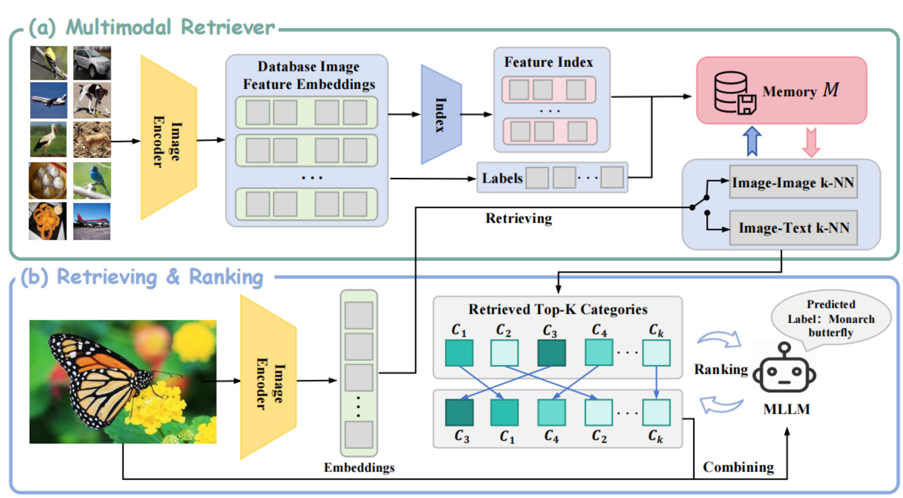
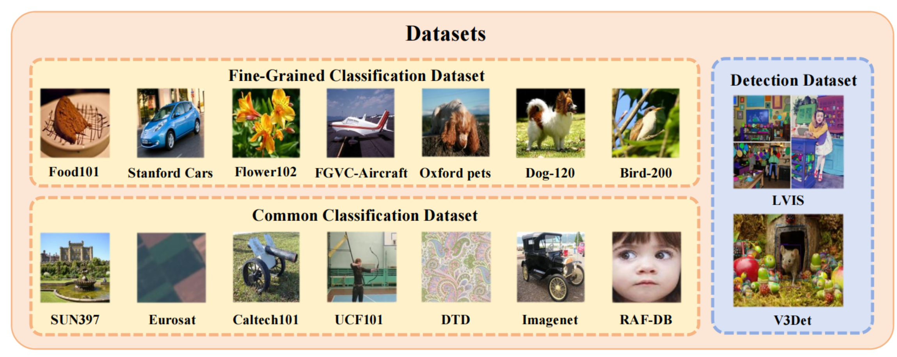
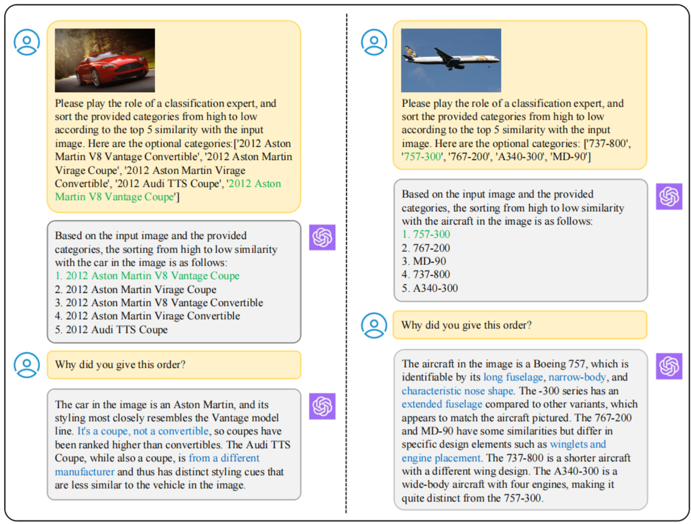
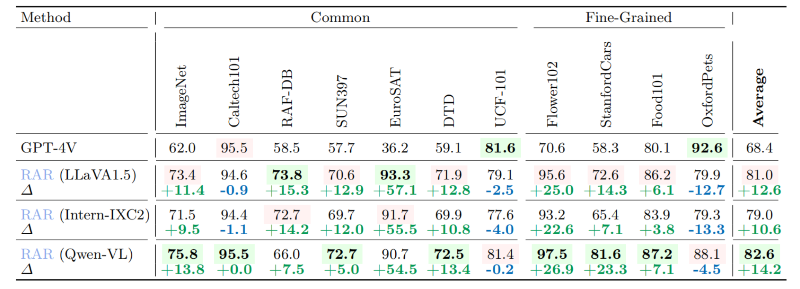

<!DOCTYPE html>
<html>

<head>
  <meta charset="utf-8">
  <meta name="description" content="SODA">
  <meta name="keywords" content="multimodal chatbot">
  <meta name="viewport" content="width=device-width, initial-scale=1">
  <title>Soda</title>

  <link rel="stylesheet" href="https://fonts.googleapis.com/css?family=Google+Sans|Noto+Sans|Castoro">
  <link rel="stylesheet" href="https://cdn.jsdelivr.net/npm/bulma@0.9.1/css/bulma.min.css">
  <link rel="stylesheet" href="https://maxcdn.bootstrapcdn.com/bootstrap/4.5.2/css/bootstrap.min.css">
  <link rel="stylesheet" href="https://cdn.jsdelivr.net/gh/jpswalsh/academicons@1/css/academicons.min.css">
  <link rel="stylesheet" href="https://cdnjs.cloudflare.com/ajax/libs/font-awesome/5.15.1/css/all.min.css">
  <link rel="stylesheet" href="./static/css/index.css">
  <link rel="icon" href="static/images/icon.png">
  <link href="https://fonts.googleapis.com/icon?family=Material+Icons" rel="stylesheet">


  <script src="https://ajax.googleapis.com/ajax/libs/jquery/3.5.1/jquery.min.js"></script>
  <script defer src="https://cdnjs.cloudflare.com/ajax/libs/font-awesome/5.15.1/js/all.min.js"></script>
  <script type="module" src="https://gradio.s3-us-west-2.amazonaws.com/3.27.0/gradio.js"></script>
</head>


<style>
    .section {
    margin-bottom: -30px; /* Adjust this value as needed to reduce the space */
  }
  .expandable-card .card-text-container {
    max-height: 200px;
    overflow-y: hidden;
    position: relative;
  }

  .expandable-card.expanded .card-text-container {
    max-height: none;
  }

  .expand-btn {
    position: relative;
    display: none;
    background-color: rgba(255, 255, 255, 0.8);
    /* margin-top: -20px; */
    /* justify-content: center; */
    color: #510c75;
    border-color: transparent;
  }

  .expand-btn:hover {
    background-color: rgba(200, 200, 200, 0.8);
    text-decoration: none;
    border-color: transparent;
    color: #510c75;
  }

  .expand-btn:focus {
    outline: none;
    text-decoration: none;
  }

  .expandable-card:not(.expanded) .card-text-container:after {
    content: "";
    position: absolute;
    bottom: 0;
    left: 0;
    width: 100%;
    height: 90px;
    background: linear-gradient(rgba(255, 255, 255, 0.2), rgba(255, 255, 255, 1));
  }

  .expandable-card:not(.expanded) .expand-btn {
    margin-top: -40px;
  }

  .card-body {
    padding-bottom: 5px;
  }

  .vertical-flex-layout {
    justify-content: center;
    align-items: center;
    height: 100%;
    display: flex;
    flex-direction: column;
    gap: 5px;
  }

  .figure-img {
    max-width: 100%;
    height: auto;
  }

  .adjustable-font-size {
    font-size: calc(0.5rem + 2vw);
  }

  .chat-history {
    flex-grow: 1;
    overflow-y: auto;
    /* overflow-x: hidden; */
    padding: 5px;
    border-bottom: 1px solid #ccc;
    margin-bottom: 10px;
  }

  #gradio pre {
    background-color: transparent;
  }
  
	/* 使用渐变颜色实现彩虹字体 */
	.rainbow-text {
	  background: linear-gradient(to right, #3498db, #2ecc71);
	  -webkit-background-clip: text;
	  color: transparent;
	  display: inline-block;
	  font-weight: bold;
	}
  
</style>

<body>

<section class="hero">
  <div class="hero-body">
    <div class="container is-max-desktop">
      <div class="columns is-centered">
        <div class="column has-text-centered">
          <h1 class="title is-1 publication-title"> <span class="rainbow-text">Soda</span>: Search, Organize, Discovery Anything</h1>
 	  <div class="is-size-5 publication-authors"> <span class="author-block"> <a href="https://github.com/Liuziyu77">Ziyu Liu</a><sup>*1,4</sup>,</span> <span class="author-block"> <a href="https://github.com/SunzeY">*Zeyi Sun</a><sup>*2,4</sup>,</span> <span class="author-block"> <a href="https://yuhangzang.github.io/">Yuhang Zang</a><sup>4</sup>, </span> <span class="author-block">  <a href="https://scholar.google.be/citations?user=41KAd6AAAAAJ&hl=en">Wei Li</a><sup>6</sup>, </span> <span class="author-block"><a href="https://panzhang0212.github.io/">Pan Zhang</a><sup>4</sup>, </span> <span class="author-block"> <a href="https://lightdxy.github.io/">Xiaoyi Dong</a><sup>4</sup>, </div> <div class="is-size-5 publication-authors"> </span> <span class="author-block"> <a href="http://yjxiong.me/">Yuanjun Xiong</a><sup>5</sup>, </span> <span class="author-block"> <a href="http://dahua.site/">Dahua Lin</a><sup>3,4</sup>, </span> <span class="author-block"> <a href="https://myownskyw7.github.io/">Jiaqi Wang</a><sup>&dagger;4</sup> </span> </div>
          <div class="is-size-5 publication-authors"> <span class="author-block"><sup>1</sup>Wuhan University,</span> <span class="author-block"><sup>2</sup>Shanghai Jiao Tong University,</span>  <span class="author-block"><sup>3</sup>The Chinese University of Hong Kong,</span><br> <span class="author-block"><sup>4</sup>Shanghai AI Laboratory,</span>
              <span class="author-block"><sup>5</sup>MThreads, Inc.,</span> <span class="author-block"><sup>6</sup>Nanyang Technological University</span> </div>
		  <div class="is-size-6 publication-authors">
              <span class="author-block"><sup>*</sup>Equally contributing first authors. <sup>&dagger;</sup>Corresponding authors.</span>
            </div>
          <div class="column has-text-centered">
            <div class="publication-links">
              <!-- PDF Link. -->
              <span class="link-block"> <a href="https://opensoda.net"
                   class="external-link button is-normal is-rounded is-dark"> <span class="icon"> <i class="fas fa-globe"></i> </span> <span>Website</span> </a> </span>
              <!-- Code Link. -->
              <span class="link-block"> <a href="https://github.com/Liuziyu77/Soda"
                   class="external-link button is-normal is-rounded is-dark"> <span class="icon"> <i class="fab fa-github"></i> </span> <span>Code</span> </a> </span>
              <!-- Dataset Link. -->
             <!--  <span class="link-block"> <a href="https://huggingface.co/spaces/Zery/Alpha-CLIP_LLaVA-1.5" -->
             <!--       class="external-link button is-normal is-rounded is-dark"> <span class="icon"> <i class="far fa-images"></i> </span> <span>Alpha-CLIP+LLM Demo</span></a></span> -->
	      <!-- Dataset Link. -->
            <!--   <span class="link-block"> <a href="https://huggingface.co/spaces/Zery/Alpha_CLIP_ImgVar" -->
              <!--      class="external-link button is-normal is-rounded is-dark"> <span class="icon"> <i class="far fa-images"></i> </span> <span>Alpha-CLIP+ImgVar Demo</span></a></span></div> -->
          	 </div>
       	   </div>
        </div>
  </div>

<section class="section">
  <div class="container is-max-desktop">
    <!-- Soda Introduction -->
    <div class="columns is-centered has-text-centered">
      <div class="column is-six-fifths">
	<div style="text-align: center;">
		     
	  </div><br>
	 
        <h2 class="title is-3">Abstract</h2>
        <div class="content has-text-justified">
		  <style>
			/* 使用渐变颜色实现彩虹字体 */
			.rainbow-text {
			  background: linear-gradient(to right, #3498db, #2ecc71);
			  -webkit-background-clip: text;
			  color: transparent;
			  display: inline-block;
			  font-weight: bold;
			}
		  </style>
          <p>
           With the advent and extensive deployment of Large Language Models (LLMs), these sophisticated systems have showcased immense potential in a variety of application domains. Nevertheless, even highly advanced models such as GPT-4 are not without their limitations; they aren't omniscient and are susceptible to the so-called 'hallucination problem'.
	  </p>
	<p>
	   Acknowledging these constraints, we have innovated <strong>SODA (Search, Organize, Discover Anything) - a cutting-edge information integration Agent</strong>, propelled by the power of large language models(LLMs). SODA Agent leverages an LLM at its core for processing information, adeptly sourcing data from a multitude of channels in response to user queries. This enables it to provide nuanced and comprehensive answers. Through SODA, users gain access to a sophisticated web search mechanism that fetches pertinent information from the internet. This integrates seamlessly with the innate knowledge of the LLM and external sources, ensuring answers are not only accurate but also reliable. Furthermore, SODA empowers users to upload personal files, facilitating the creation of a private, secure, and robust local knowledge database. This feature allows LLMs to assimilate new information effortlessly, eliminating the need for pre-training or fine-tuning, and to utilize this knowledge effectively in response to queries.
	</p>
          <p>
            Overall, SODA is envisioned as a <strong>secure</strong>, <strong>dependable</strong>, and <strong>intelligently sourced</strong> agent tool. It's strategically designed to enable users to proficiently handle and interpret information gleaned from expansive models, the web, and your own database.
	</div>
    </div>
    <!--/ Abstract. -->

<!--     Paper video. -->
<!--     <div class="columns is-centered has-text-centered">
      <div class="column is-six-fifths">
        <h2 class="title is-3">Video</h2>
        <div class="publication-video">
          <iframe src="https://www.youtube.com/embed/UAUJNFJSbiI?rel=0&amp;showinfo=0"
                  frameborder="0" allow="autoplay; encrypted-media" allowfullscreen></iframe>
        </div>
      </div>
    </div> -->
    <!--/ Paper video. -->
  </div>

<section class="section"  style="background-color:#efeff081" id="Highlight">
      <div class="container is-max-desktop">
        <div class="columns is-centered has-text-centered">
          <div class="column is-six-fifths">
            <h2 class="title is-3">🔥Highlight</h2>
            <div class="content has-text-justified">
              <p style="font-size: 15px;">
                <ul>
				  <li><b>New technology framework.</b> We have developed an LLM-driven information integration Agent, which provides a technical framework for retrieval argumented generation(RAG) and tool use directions for AI Agents.</li>
			          <li><b>Good compatibility.</b> SODA is capable of easily swapping components, utilizing various search engines or vector databases, and exhibits good compatibility.</li>
				  <li><b>Reliable&traceable</b> SODA effectively addresses partial hallucination issues of LLM, providing reliable and accurate answers with traceable information sources.</li>
				  <li><b>Data privacy.</b> SODA supports local databases, allowing the model to acquire new knowledge without pretraining or finetuning, while effectively protecting user data privacy.</li>
		</ul>
              </p>
            </div>
          </div>
        </div>
      </div>
</section><br>

<section class="section" id="Soda System Overview">
   <div class="container is-max-desktop">
      <div class="columns is-centered has-text-centered">
        <div class="column is-six-fifths">
          <h2 class="title is-3"> RAR System Overview</h2>
        </div>
	    </div>
	      <div class="container is-max-desktop">
	        <div class="columns is-centered">
	          <div class="column is-full-width">
	            <div class="content has-text-justified">
	              <p>
	               We propose augmenting standard MLLMs with our RAR, a retrieving-and-ranking augmented technique. Our RAR enables models to dynamically incorporate external knowledge into the processing and generation workflows. By augmenting MLLMs with external knowledge sources, we address challenges related to language ambiguity, synonym handling, and the limitations imposed by limited context windows when dealing with vast vocabularies. Our method uses the inherent strength of MLLMs in generalizing from existing knowledge while addressing their limitations in visual recognition. We design a multimodal retriever that extracts the image or text embeddings and stores embeddings in an external memory M. For the inference stage of downstream recognition tasks, we retrieve top-k categories from the memory and use MLLMs to refine the retrieved results as the final prediction through ranking.
	                <centering>
	                  <div style="text-align: center;">
	                         
	                  </div> 
                       </p>
		       <p>
	               Here，we showcase the dataset utilized in our RAR testing, featuring an extensive array of fine-grained classification datasets alongside detection datasets enriched with a vast vocabulary.
			<centering>
	                  <div style="text-align: center;">
	                         
	                  </div> 
                       </p>
            </div>
            </b></font>
          </div>
        </div>
      </div>
    </section>


<section class="section" id="Interesting Observation">
   <div class="container is-max-desktop">
      <div class="columns is-centered has-text-centered">
        <div class="column is-six-fifths">
          <h2 class="title is-3"> Interesting Observation</h2>
        </div>
	    </div>
	      <div class="container is-max-desktop">
	        <div class="columns is-centered">
	          <div class="column is-full-width">
	            <div class="content has-text-justified">
	              <p>
	               In the field of image classification, especially when facing the challenges of fine-grained image categorization, can
MLLMs prove competent and effective? To further explore the potential of
MLLMs in image classification tasks, we employed the GPT-4V model to test selected images from our fine-grained datasets.</p>
			<centering>
	                  <div style="text-align: center;">
	                         
	                  </div><br>
			<p>GPT-4V identifies key characteristics such as “coupe” (a two-door car) and “long fuselage” (long body of an
aircraft), which are crucial for distinguishing between similar categories.</p>
				
              <p>To further explore the potential of RAR, we expanded the memory size to include all images from the training set
stored in memory. We then compared the performance of RAR under this setup with that of GPT-4V across multiple image classification datasets. The results
are presented in the following table. The results show that, regardless of whether the base model is LLaVa, Intern-IXC2, or Qwen-VL, RAR significantly outperforms GPT-4V in
terms of accuracy. It is observed that even 7B MLLMs, when integrated into the RAR pipeline, far surpass the classification capabilities
of GPT-4V across multiple image classification datasets.</p>
	<centering>
	  <div style="text-align: center;">
	         
	  </div><br>
            </div>
            </b></font>
          </div>
        </div>
      </div>
    </section>

				 
				 
<footer class="footer">
  <div class="container">
    <div class="columns is-centered">
      <div class="column is-8">
        <div class="content">
          <p>
            This website is licensed under a <a rel="license"
                                                href="http://creativecommons.org/licenses/by-sa/4.0/">Creative
            Commons Attribution-ShareAlike 4.0 International License</a>.
          </p>
        </div>
      </div>
    </div>
  </div>
</footer>


</body>
</html>
